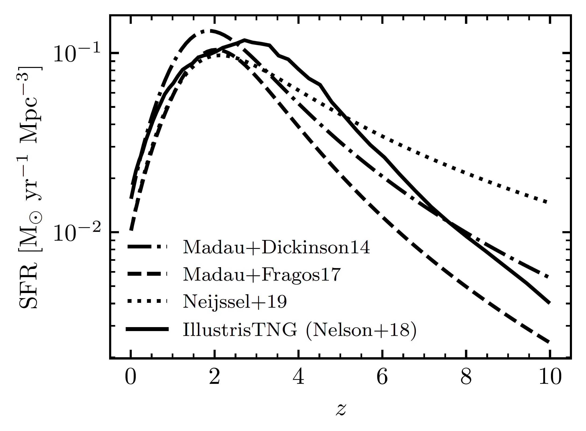
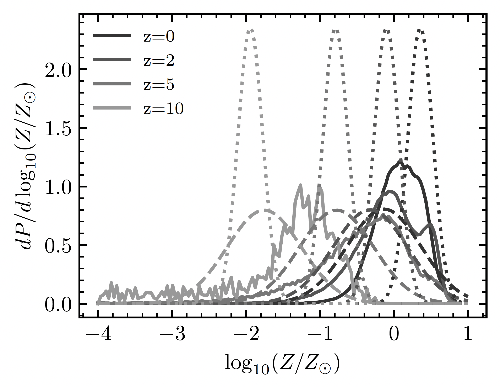

Explore the assumption of star-formation history and DCO compute rates at one single metallicity üìñÔÉÅ
If you haven’t done so yet, export the path POSYDON environment variables. For example:
Creating the Synthetic Population DataFrame
We will use the same BBH population as in the Stellar Transient Populations tutorial. Instead of computing the distributions and rates at all metallicities, we will just focus on one metallicity, \(Z_\odot\), and integrate the star formation history around solar metallicity, say \([0.5Z_\odot,2Z_\odot]\). Let’s extract the merging BBH population from the \(Z_\odot\) population synthesis model. In this sample there are only a few systems; to increase the statistics we suggest you
run a population containing more binaries, if you want to do a more thorough analysis.
[ ]:
import os
from posydon.popsyn.synthetic_population import Population
from posydon.config import PATH_TO_POSYDON_DATA
data_path = f'{PATH_TO_POSYDON_DATA}/tutorial_populations/'
pop = Population(data_path+'1e+00_Zsun_population.h5')
pop.history.head(10)
POSYDON supports different assumptions for the star formation history, e.g. instead of using the IllustrisTNG SFH, we can use the star formation rate from Madau & Fragos (2018) (see Andrews et al. 2024) and assume a log-normal metallicity distribution around the empirically measured mean metallicity at each redshift from Madau & Fragos (2018), taking a dispersion of 0.5 dex (see Bavera et al. 2020). The IllustrisTNG star formation rate and metallicity evolution (solid line) is compared to the Madau & Fragos (2018) metallicity evolution (dashed line) in Fig. 22 of (see Andrews et al. 2024), which is reproduced below. The dotted line corresponds to the metallicity distribution of Neijssel et al. (2019).
 Single metallicity population
Similar to the multi-metallicity tutorial, we will set up a BBH selection from our \(Z_\odot\) population and then calculate the transient population.
[ ]:
# read the relevant data in one go
# (faster than reading it in chunks, but requires more memory)
tmp_data = pop.history.select(columns=['S1_state', 'S2_state', 'event'])
# Selection of S1 being a BH
S1_state = tmp_data['S1_state'] == 'BH'
# Selection of S2 being a BH
S2_state = tmp_data['S2_state'] == 'BH'
# Selection of the binary system being in contact during the double CO phase.
state = tmp_data['event'] == 'CO_contact'
indices = tmp_data.index
del tmp_data
mask = S1_state & S2_state & state
selected_indices = indices[mask].to_list()
print(f'Number of systems: {len(selected_indices)}')
# set overwrite to False to add to the file
pop.export_selection(selected_indices, 'Zsun_BBH_contact.h5')
[ ]:
from posydon.popsyn.synthetic_population import Population
pop = Population('Zsun_BBH_contact.h5')
[ ]:
pop.history
[ ]:
pop.calculate_formation_channels(mt_history=True)
[ ]:
pop.formation_channels
Transient Population
[ ]:
from posydon.popsyn.transient_select_funcs import BBH_selection_function
BBH_mergers = pop.create_transient_population(BBH_selection_function, 'BBH')
Even though we have a single metallicity, we can still calculate the efficiency per \(M_\odot\) for it.
We still have to calculate the underlying_mass for the population before calculating the efficiency.
[ ]:
from posydon.popsyn.synthetic_population import TransientPopulation
BBH_mergers = TransientPopulation('Zsun_BBH_contact.h5', 'BBH')
# returns the underlying mass and stores it in the mass_per_metallicity attribute
BBH_mergers.calculate_underlying_mass(f_bin=0.7)
BBH_mergers.get_efficiency_over_metallicity()
Compute the BBH Merger Rates for \(Z\in [0.5Z_\odot,2Z_\odot]\)
Similar to the Stellar Transient Populations we compute the BBH merger rate density to obtain the BBH intrinsic population.
However, because we are only working with a single metallicity, we have to set the metallicity limits we would like to work with!
The MODEL_in parameter gives us the option to select only one metallicity and select only the star formation within a specific range. This dictionary does not require a full model to be defined, and will use the default values if required.
The dlogZ has to be given in log-space in units of solar metallicity.
[ ]:
import numpy as np
MODEL_in = {
'select_one_met' : True,
'dlogZ' : [np.log10(0.0142/2),np.log10(0.0142*2)],
}
rates = BBH_mergers.calculate_cosmic_weights('IllustrisTNG', MODEL_in=MODEL_in)
[ ]:
rates.calculate_intrinsic_rate_density(channels=True)
[ ]:
import matplotlib.pyplot as plt
rates.plot_intrinsic_rate(channels=True, show=False)
plt.xlim(0,10)
plt.show()
[ ]:
from posydon.popsyn.transient_select_funcs import DCO_detectability
from posydon.popsyn.synthetic_population import Rates
rates = Rates('Zsun_BBH_contact.h5', 'BBH', 'IllustrisTNG',)
def DCO_wrapper(transient_chunk, z_events_chunk, weights_chunk):
sensitivity = 'design_H1L1V1'
return DCO_detectability(sensitivity, transient_chunk, z_events_chunk, weights_chunk, verbose=False)
[ ]:
# We also give it a name, which is used as an identifier in the file
rates.calculate_observable_population(DCO_wrapper, 'design_H1L1V1')
[ ]:
# We can now access this observable population
rates.observable_population('design_H1L1V1')
Visualize the BBH Population Properties
Similar to the multi-metallicity tutorial, we are able to plot the properties of the intrinsic and observed populations. In this case, we normalise both distributions using the normalise=True option.
[ ]:
import numpy as np
import matplotlib.pyplot as plt
bins = np.linspace(0,100,101)
fig, ax = plt.subplots(1,1)
rates.plot_hist_properties('S1_mass', intrinsice=True, observable='design_H1L1V1', normalise=True, bins=bins, ax = ax, label='S1', show=False)
ax.set_ylabel('PDF')
ax.set_xlabel('Mass [Msun]')
ax.legend()
plt.show()